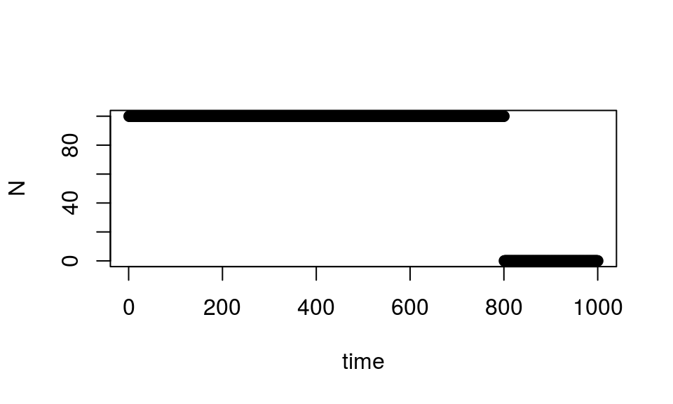

These notes are the result of the interplay between my mathematical upbringing and my development as a theoretical biologist. I have placed them here primarily for my own reference. As I continue to learn and explore I will update these notes with my findings.
I denote the fitness of an individual by \(\mathcal{W}\), a Poisson distributed random variable. Why Poisson? Firstly, the fitness of an individual is a non-negative integer, which is precisely the support of the Poisson distribution. Secondly, the Poisson distribution has the property of maximizing entropy for all distributions that share its support under the constraint of having some specified mean. This is another of way stating that, aside from the first statistical moment, the Poisson distribution assumes the least information about the random variable it is modelling. If more information is known, a more precise distribution can be invoked. However, this would also make the resulting model less general.
We denote expectation by \(\mathbb{E}\) and \(W\equiv\mathbb{E}\mathcal{W}\) so that \(W\) represents the mean fitness of an individual (\(\equiv\) is used for definitions). This individual mean fitness may depend on its genotype (\(\gamma\)) or, more mechanistically, its phenotype (\(z\)). In general genotypes will be modelled as elements of some discrete space, usually finite, and phenotypes will usually be modelled as elements of the real line \(\mathbb{R}\), although at times we will restrict the range of phenotypes to be a countable or even finite subset of \(\mathbb{R}\). In the case of a random phenotype \(Z\) we write \(W(z)\equiv\mathbb{E}(\mathcal{W}(Z)|Z=z)\), that is \(W(z)\) is a conditional mean, conditioned on the phenotype \(Z\) taking a particular value \(z\). Using \(\phi(z)\) for the density function of the populations phenotypic distribution, the total expectation of fitness, or, population mean fitness is \(\overline W=\mathbb{E}\mathcal{W}(Z)=\int W(z)\phi(z)dz\)
Let’s suppose there are \(N_t\) different individuals in the population at time \(t\), with each individual \(i\) having fitness \(\mathcal{W_t}(i)\). If we further suppose that generations are non-overlapping, then we obtain the population size in the next generation as \(N_{t+1}=\sum_{i=1}^{N_t}\mathcal{W_t}(i)\). If each \(\mathcal{W_t}(i)\) is a Poisson random variable with mean \(W_t(i)\) (in symbols \(\mathcal{W_t}(i)\sim\mathcal{P}(W_t(i))\)), then by the additive property of Poisson random variables we have \(N_{t+1}\sim\mathcal{P}\left(\sum_{i=1}^{N_t}W_t(i)\right)\). If selection is absent so that each \(\mathcal{W_t}(i)\) is identically distributed with mean \(W_t\), then \(N_{t+1}\sim\mathcal{P}(W_tN_t)\).
insert stuff about stochastic population dynamics here
If we assume that selection is absent and mean fitness is constant with respect to time, we can derive continuous time mean dynamics of \(N_t\). To do so, suppose that for \(0<\delta<1\), \(\mathbb{E}N_{t+\delta}=W^\delta\mathbb{E} N_t\). Then \(\mathbb{E}N_{t+0}=\mathbb{E}N_t\) and \(\mathbb{E}N_{t+1}=W\mathbb{E}N_t\). Hence
\[\mathbb{E}\frac{dN_t}{dt}=\frac{d}{dt}\mathbb{E}N_t=\lim_{\delta\rightarrow0}\frac{\mathbb{E}N_{t+\delta}-\mathbb{E}N_t}{\delta}=\lim_{\delta\rightarrow0}\frac{(W^\delta-1)}{\delta}\mathbb{E}N_t=\ln(W)\mathbb{E}N_t.\] Note that switching the derivative and the expectation must be formally justified. In what follows, we won’t drag the annoying expectation symbol along with us. Instead we will adopt the convention that \(N_t\) is actually an expected value.
In typical notation one would write \(r\) in place of \(\ln(W)\). This exposes an interesting connection between two very distinct notions of fitness. The notion of fitness that I’ve been working with, \(W\), is called the Wrightian, or, multiplicative fitness. It is a non-negative number that corresponds to the number of offspring produced for some category. It’s been called multiplicative fitness because the multiplication of any two Wrightian fitnesses is yet another Wrightian fitness. The natural log of this value is known as the Malthusian, or, additive fitness. Its value can be any real number and, depending on its use, can also be infinitely negative. Note that the log of a product is the sum of the logs. It’s this basic log rule that provides the Malthusian fitness its additivity. The sum of any two Malthusian fitnesses is again a Malthusian fitness. Artem Kaznatcheev has a nice discussion of this topic here. To solidify the connection between these two notions of fitness, consider a population that maintains a constant size of 100 but becomes extinct instantaneously (as shown below). This corresponds to each individual having a fitness of 1 (remember we’re assuming fitness is constant trhoughout the population) making the Malthusian fitness of the population zero. Then when the population drops each individual must suddenly have a Wrightian fitness of zero. The Malthusian fitness of the population will then be \(\ln(0)\) which is \(-\infty\), corresponding to the discontinuous drop in the population size.

However, this result is a bit of an abuse of the above derivation as we had made the assumption that fitness is constant with respect to time. If we assume that \(\frac{dN_t}{dt}=\ln(W_t)N_t\), where now \(W_t\) is allowed to change with respect to time, then for consistency it would be good to reconcile this equation with the above assumption that \(\Delta N_t=N_{t+1}-N_t=(W_t-1)N_t\). Doing so restricts the nature of \(W_t\), specifically \(\frac{dW_t}{dt}=W_t\ln\left(\frac{W_{t+1}}{W_t}\right)\). This states that if \(W_t=0\) for some \(t\), then \(W_s=0\) for \(s>t\). That is to say, if the population goes extinct, it remains extinct. This makes perfect sense in the absence of immigration, but there’s another implication in this equation and to explore it I will assume that the general form of \(W_t\) is \(W_t=e^{r(t)}\) for some function \(r(t)\). Note that this implies \(\frac{dN_t}{dt}=r(t)N_t\). Then we can use the previously derived equation to show that \(\frac{d}{dt}r(t)=r(t+1)-r(t)\). In the case that \(r(t+1)=k+r(t)\) for some constant \(k\), we get \(r(t)=kt+c\), making \(W_t=e^{kt+c}\) and hence \(\frac{dN_t}{dt}=(kt+c)N_t\). But we can also make \(k(t)\) a function \(t\). Here we get
\[r(t)=\int_0^tk(s)ds+c\implies\frac{dN_t}{dt}=\left(\int_0^tk(s)ds+c\right)N_t\] This might be handy if, say, you wanted to incorporate the effects of population dynamics of another species that interacts with this one. In that case \(k(t)\) would likely be a function of the other species’ population size at time \(t\). But there are other possibilities. For example, we can set \(r(t+1)=kr(t)\) to get \(r(t)=e^{(k-1)t}+c\) and hence \(\frac{dN_t}{dt}=\left(e^{(k-1)t}+c\right)N_t\) or, of course, \(r(t+1)=k(t)r(t)\) to get
\[\frac{dN_t}{dt}=\left(e^{\int_0^tk(s)ds-t}+c\right)N_t.\]
Regardless of what is chosen for \(r(t+1)\), this trick will be assured to work when \(r(t+1)\) is a linear function of \(r(t)\). That is, \(r(t+1)=a(t)+b(t)r(t)\). In this general case we get \(r(t)=\int_0^ta(s)ds+e^{\int_0^tb(s)ds-t}+c\) and hence
\[\frac{dN_t}{dt}=r(t)N_t=\left(\int_0^ta(s)ds+e^{\int_0^tb(s)ds-t}+c\right)N_t.\]
We can then solve for the mean population size as a function of time to get
\[N_t=N_0e^{\int_0^tr(s)ds}.\]
The normal distribution is the most important distribution due to various theorems and properties such as the central limit theorems and it’s maximum entropy property. It’s known for its mathematical elegance and empirical ubiquity and, like all distributions, can be identified by it’s density and characteristic functions, both of which are Gaussian. In what follows I will use the terms Gaussian and normal interchangebally.
Gaussian functions play a central role in evolutionary theory. Arguably the most successful equation describing the evolution of a population, the breeder’s equation, requires a normal phenotypic distribution. Typical notation is \(z\) for the phenotype of an individual, \(\bar z\) for the mean phenotype of the population, \(\sigma^2\) for the phenotypic variance and \(\phi\) for the phenotypic density. This provides
\[\phi(z)=\frac{1}{\sqrt{2\pi\sigma^2}}\exp\left(-\frac{(z-\bar z)^2}{2\sigma^2}\right).\]
If there’s selection being imposed on the trait then the fitness \(W(z)\), which denotes the average fitness of an individual with trait \(z\), will not be identically constant. To find the response in mean phenotype to an episode of selection we use the breeder’s equation \(\Delta\bar z=G\frac{\partial\ln\overline W}{\partial\bar z}\) where \(G=h^2\sigma^2\) is the additive genetic variance and \(\overline W=\int_{-\infty}^\infty\phi(z)W(z)dz\) is the mean fitness of the population. However, in order to do so we must first calculate \(\overline W\). In the case of stabilizing selection, this can be done quite nicely by assuming \(W\) is also a Gaussian function of \(z\). That is
\[W(z)=\frac{1}{\sqrt{2\pi\omega^2}}\exp\left(-\frac{(z-\theta)^2}{2\omega^2}\right)\]
with \(\theta\) being the phenotypic optimum and \(\omega^2\) the phenotypic tolerance of selection, which should be thought of as the inverse of the strength of selection. The reason why this calculation is easier with a Gaussian fitness is due to the algebra that Gaussian functions obey. Specifically, the product of two Gaussians is yet another Gaussian. For example
\[W(z)\phi(z)=\frac{C}{\sqrt{2\pi\tilde\sigma^2}}\exp\left(-\frac{(z-\tilde z)^2}{2\tilde\sigma^2}\right), \ \text{where} \ \tilde\sigma^2=\frac{\sigma^2\omega^2}{\sigma^2+\omega^2}, \ \tilde z=\frac{\sigma^2\theta+\omega^2\bar z}{\sigma^2+\omega^2}\]
and \(C\) is some constant. What’s interesting here is to note that the new parameter \(\tilde z\) is a weighted average of \(\theta\) and \(\bar z\), weighted by the tolerance and variance. It should also be noted that \(\tilde\sigma^2<\sigma^2\). One can show that as \(\omega^2\rightarrow\infty\), \(\tilde z\rightarrow\bar z\) and \(\tilde\sigma^2\rightarrow\sigma^2\), in agreement with the concept of \(\omega^2\) being the inverse of the strength of selection. With this result we see that \(\overline W\) is just the integral of the above product over the whole real line. However, this product is just a scaled version of a probability density, scaled by \(C\). Hence, \(\overline W=C\). Then we need to calculate \(C\), and for this I very briefly introduce the binary operation known as convolution.
The concept of a convolution can be readily captured graphically by visualizing the graphs of two functions \(g_1(z)\) and \(g_2(z)\) sliding across each other horizontally. We parameterize this sliding by \(\tau\) which lives on the real number line. We’ll let \(g_2\) remain still and slide \(g_1\). As \(\tau\) runs from each end of the number line visualize the graph of \(g_1\) sliding across \(g_2\). As this sliding occurs, we accumulate the product of these two functions with an integral in such a way that we integrate out \(\tau\). At this point I recommend taking a peek at the wikipedia. In symbols we denote the convolution between \(g_1\) and \(g_2\) by \[g_1 \ast g_2\] and define it as
\[(g_1*g_2)(z)\equiv\int_{-\infty}^\infty g_1(\tau-z)g_2(z)d\tau.\]
It turns out that \(\overline W\) can be seen as the convolution of two functions. Namely \(\phi_0(\bar z)\equiv\phi(0)\) and \(W_0(\bar z)\equiv W(\bar z)\), the phenotypic density evaluated at zero and the fitness function evaluated at the population mean phenotype respectively. Although \(\phi(0)\) and \(W(\bar z)\) are technically constants, both of the resulting functions are sensitive to the value of \(\bar z\). We could take care by rigorously defining these objects but I’ll leave the mathematical formalities out of this discussion. Instead, observe
\[\phi_0*W_0=\int_{-\infty}^\infty\phi_0(\bar z-\tau)W_0(\tau)d\tau=\star.\]
If we use \(z\) instead of \(\tau\), this gives
\[\star=\int_{-\infty}^\infty\phi_0(\bar z-z)W_0(z)dz\]
\[=\int_{-\infty}^\infty\left[\frac{1}{\sqrt{2\pi\sigma^2}}\exp\left(-\frac{(\bar z-z)^2}{2\sigma^2}\right)\right] \left[\frac{1}{\sqrt{2\pi\omega^2}}\exp\left(-\frac{(z-\theta)^2}{2\omega^2}\right)\right]dz\]
\[=\int_{-\infty}^{\infty}\varphi(z)W(z)dz=\overline W.\]
Okay, so \(\overline W\) can be written as a convolution, so what? Well it turns out that Gaussian probability densities are closed under convolutions, which is to say that a convolution of two Gaussian densities is yet another Gaussian density. Specifically, if \(g_1(z)\) is a Gaussian probability density with mean \(\mu_1\) and variance \(\sigma_1^2\) and similarly with \(g_2(z)\), then \[(g_1 \ast g_2)(z)=g_3(z)\] is another Gaussian probability density with the mean \(\mu_3=\mu_1+\mu_2\) and variance \(\sigma_3^2=\sigma_1^2+\sigma_2^2.\) Noting that, as probability densities, \(\phi_0\) has mean zero and variance \(\sigma^2\) and \(W_0\) has mean \(\theta\) and variance \(\omega^2\), we now calculate \(\overline W\) as
\[\overline W=\int_{-\infty}^\infty\phi(z)W(z)dz=(\phi_0*W_0)(\bar z)=\frac{1}{\sqrt{2\pi(\sigma^2+\omega^2)}}\exp\left(-\frac{(\bar z-\theta)^2}{2(\sigma^2+\omega^2)}\right).\]
Finally, we obtain the response in mean phenotype to \(W\) using the breeder’s equation
\[\Delta\bar z=G\frac{\partial\ln\overline W}{\partial \bar z}=G\frac{\partial}{\partial\bar z}\left[\ln\left(\frac{1}{\sqrt{2\pi(\sigma^2+\omega^2)}}\right)-\frac{(\bar z-\theta)^2}{2(\sigma^2+\omega^2)}\right]\]
\[=G\frac{\theta-\bar z}{\sigma^2+\omega^2}.\]
To summarize the properties of products and convolutions of Gaussians:
\[g_1(z)g_2(z)=Cg_3(z), \text{ where } \mu_3=\frac{\sigma_1^2\mu_2+\sigma_2^2\mu_1}{\sigma_1^2+\sigma_2^2}, \ \sigma_3^2=\frac{\sigma_1^2\sigma_2^2}{\sigma_1^2+\sigma_2^2},\]
\[C=\int g_1g_2dz=\frac{1}{\sqrt{2\pi(\sigma_1^2+\sigma_2^2)}}\exp\left(-\frac{(\mu_1-\mu_2)^2}{2(\sigma_1^2+\sigma_2^2)}\right).\]
\[\prod_{i=1}^{n-1}g_i(z)=C'g_n(z), \text{ where } \mu_n=\frac{\sum_{i=1}^{n-1}\mu_j\prod_{j\neq i}\sigma_j^2}{\sum_{i=1}^{n-1}\prod_{j\neq i}\sigma_j^2}, \ \sigma_n^2=\frac{\prod_{i=1}^{n-1}\sigma_i^2}{\sum_{i=1}^{n-1}\prod_{j\neq i}\sigma_j^2}, \ C'=\int\prod_{i=1}^{n-1}g_idz\]
\[(g_1*g_2)(z)=g_3(z), \text{ where } \mu_3=\mu_2+\mu_1, \ \sigma_3^2=\sigma_1^2+\sigma_2^2.\]
Here we cover a way to linearize the most simple model of genetic selection. We assume two genotypes, \(A_1\) and \(A_2\), with the frequencies \(p\) and \(q=1-p\) and fitnesses \(W_1\) and \(W_2\) respectively. Then \(\overline W=pW_1+qW_2\) and the change in genotype frequency of \(A_1\) is (ignoring all other processes)
\[\Delta p=pq\frac{\partial\ln\overline W}{\partial p}, \ \text{with} \ \overline W=pW_1+qW_2\]
The resulting dynamics are clearly nonlinear, but are they truly nonlinear or is this due to the fact that the state space is restricted to the open unit interval? If we stretch the unit interval across the whole real line, maybe the dynamics will become linear. To find out we define \(x\equiv\ln\left(\frac{p}{q}\right)\) and calculate \(\Delta x\). For brevity I will write \(D_p\) in place of \(\frac{\partial}{\partial p}\).
\[\Delta x=x'-x=\ln\left(\frac{p'}{q'}\right)-\ln\left(\frac{p}{q}\right)=\ln\left(\frac{p'q}{q'p}\right)\]
\[\implies\exp(\Delta x)=\frac{p+\Delta p}{q-\Delta p}\frac{q}{p}=\frac{1+qD_p\ln\overline W}{1-pD_p\ln\overline W}=\frac{\overline W+qD_p\overline W}{\overline W-pD_p\overline W} =\frac{\overline W+(1-p)\left(W_1-W_2\right)}{\overline W-p\left(W_1-W_2\right)}=\frac{W_1}{W_2}\]
\[\implies \Delta x=\ln\left(\frac{W_1}{W_2}\right).\]
Hence, the dynamics stretched onto the whole real line are not only linear, but constant! I have yet to investigate whether this can be done for models involving higher ploidy.